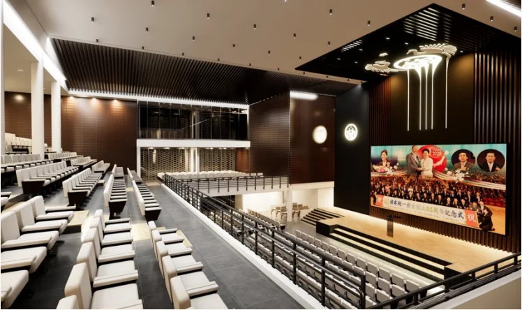

PORTFOLIO ARCHITECTURAL
Des lieux à vivre.
Des idées à partager.
De l’habitat aux lieux collectifs,
une exploration des espaces,
des usages et de la matière.
LE PROJET À LA UNE
Une autre façon
d’habiter la ville.
Villa OUA
Une écriture contemporaine,
entre volumes et espaces de vie.
LES PROJETS
Un regard. Plusieurs échelles.
Explorez la collection par univers.
LES CARNETS DE PROJETS
Prendre le temps de regarder.
Une sélection de pages issues de mes portfolios.

DU DÉTAIL À L’ENSEMBLE.À PROPOS DU PORTFOLIO
Penser l’espace.
Raconter le projet.
Je suis Wanja Ntalindwa, architecte développeur à Kinshasa, inscrit au CNOA sous le n° 1255. Ce portfolio rassemble une sélection de projets d’habitat, de lieux d’accueil et d’équipements, ainsi que des explorations d’aménagement.
Des premières intentions aux images du projet, chaque fiche propose un regard sur le programme et les espaces. Les contextes de collaboration sont précisés dans les fiches lorsqu’ils sont documentés.
ET SI NOUS CONSTRUISIONS LA SUITE ?